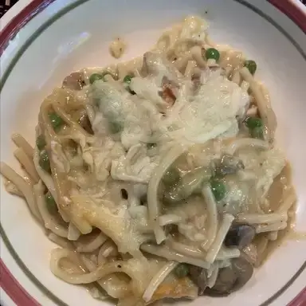

Chicken Noodle Casserole
Ingredients
- 8 oz egg noodles
- 2 cups cooked chicken, diced
- 1 can (10.5 oz) cream of mushroom soup
- 1 cup milk
- 2 cups frozen mixed vegetables
- 1 cup cheddar cheese, shredded
- Salt and pepper to taste
- 1 cup breadcrumbs (optional topping)
Instructions
- Preheat oven to 350°F (175°C)
- Cook noodles according to package directions, drain and set aside
- Mix cream of mushroom soup and milk in a large bowl
- Add chicken, noodles, vegetables, and cheese to soup mixture
- Season with salt and pepper
- Pour into greased 9x13 inch baking dish
- Bake for 30-35 minutes until heated through
- Top with breadcrumbs and bake 5 more minutes if desired
Servings
Serves 6-8 people
Cooking Time
Prep time: 15 minutes | Cook time: 35 minutes | Total time: 50 minutes
Notes
Feel free to customize with your favorite vegetables or cheese varieties!